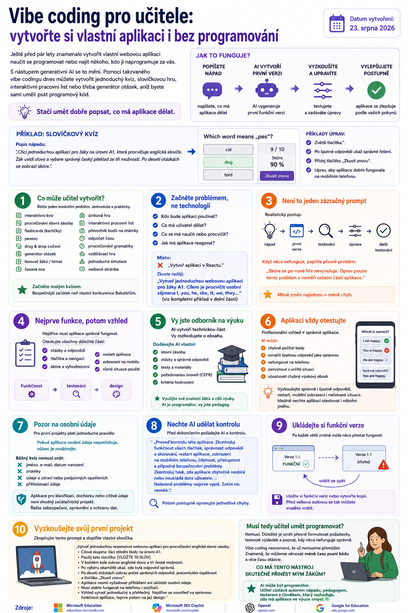

Ještě před pár lety znamenalo vytvořit vlastní webovou aplikaci naučit se programovat nebo najít někoho, kdo ji naprogramuje za vás. S nástupem generativní AI se to mění. Pomocí takzvaného vibe codingu dnes můžete vytvořit jednoduchý kvíz, slovíčkovou hru, interaktivní pracovní list nebo třeba generátor otázek, aniž byste sami uměli psát programový kód.

Stačí umět dobře popsat, co má aplikace dělat. AI může připravit technickou část, ale učitel zůstává autorem nápadu, pedagogem, testerem a člověkem, který rozhoduje, zda má výsledná aplikace ve výuce smysl.
Co je vibe coding?
Při vibe codingu neprogramujete aplikaci řádek po řádku. Místo toho popíšete AI svůj nápad běžným jazykem.
Například:
Chci jednoduchou aplikaci pro žáky na úrovni A1, která procvičuje anglická slovíčka. Žák uvidí slovo a vybere správný český překlad ze tří možností. Po deseti otázkách se zobrazí skóre.
AI vytvoří první verzi. Tu si otevřete, vyzkoušíte a postupně upravujete:
- „Zvětši tlačítka.“
- „Po špatné odpovědi ukaž správné řešení.“
- „Přidej tlačítko ‚Zkusit znovu‘.“
- „Uprav aplikaci tak, aby dobře fungovala na mobilním telefonu.“
Vibe coding je tedy spíše spolupráce s AI při vývoji aplikace než klasické programování.
Co může učitel vytvořit?
Pro školní použití nemusí jít o žádné složité systémy. Naopak. Nejlepší výsledky často vzniknou tehdy, když aplikace řeší jeden konkrétní problém.
Můžete vytvořit například:
- interaktivní kvíz,
- procvičování slovní zásoby,
- flashcards,
- pexeso,
- drag & drop cvičení,
- generátor náhodných otázek,
- losovač žáků nebo témat,
- časovou osu,
- jednoduchou únikovou hru,
- interaktivní pracovní list,
- převodník bodů na známky,
- odpočet času,
- procvičování gramatiky,
- vzdělávací hru,
- jednoduchou simulaci,
- webovou stránku ke školnímu projektu.
Pro první pokus rozhodně nemusíte vytvářet nový informační systém školy. Malý kvíz je bezpečnější začátek než vlastní konkurence Bakalářům.
Začněte problémem, ne technologií
Nemusíte vědět, co je React, JavaScript nebo CSS. Pro učitele je důležitější popsat:
- Kdo bude aplikaci používat?
- Co má uživatel dělat?
- Co se má naučit nebo procvičit?
- Jak má aplikace reagovat?
Místo zadání:
zkuste například:
Cílem je procvičit osobní zájmena I, you, he, she, it, we, they.
Vždy zobraz krátkou větu s mezerou a tři možnosti odpovědi. Po odpovědi okamžitě ukaž, zda byla správná. Po deseti otázkách zobraz skóre a tlačítko „Zkusit znovu“.
Aplikace nesmí vyžadovat přihlášení ani ukládat osobní údaje žáků. Musí dobře fungovat na telefonu i počítači.
Takové zadání dává AI mnohem lepší představu o výsledku, který potřebujete.
Vibe coding není jeden zázračný prompt
Nečekejte:
zadání → dokonalá aplikace
Mnohem realističtější postup je:
nápad → první verze → testování → úprava → další testování
Když něco nefunguje, popište AI přesně problém:
Právě poslední část je užitečná. Když AI dostane deset změn najednou, někdy při opravě jedné věci rozbije dvě další.
Nejprve funkce, potom vzhled
Je lákavé začít požadavkem na krásné animace, 3D ikony a efektní barevné přechody. Jenže nejdříve by měla fungovat samotná aplikace.
Otestujte:
- otázky,
- odpovědi,
- tlačítka,
- skóre,
- navigaci,
- restart aplikace.
Funkčnost → testování → design.
Vy jste odborník na výuku
AI může vytvořit technickou část aplikace. To ale neznamená, že má rozhodovat o tom, co se mají vaši žáci učit.
Pokud můžete, dodávejte AI vlastní:
- slovní zásobu,
- otázky,
- správné odpovědi,
- texty,
- výukové materiály,
- požadovanou úroveň CEFR,
- kritéria hodnocení.
Nechte AI vytvořit technickou vrstvu kolem vašeho výukového obsahu. Právě zde má učitel oproti běžnému programátorovi velkou výhodu — zná své žáky a ví, čeho chce ve výuce dosáhnout.
Aplikaci vždy otestujte
Profesionálně vypadající aplikace nemusí být správná aplikace.
AI může vytvořit nástroj, který:
- chybně počítá body,
- označuje špatnou odpověď jako správnou,
- nefunguje na telefonu,
- po určité kombinaci kliknutí zamrzne,
- obsahuje chybný výukový obsah.
Proto aplikaci před použitím se žáky vždy sami projděte. Vyzkoušejte správné i špatné odpovědi, restart aplikace, mobilní zobrazení i situace, které jste původně neplánovali.
Ideální je dát ji před hodinou vyzkoušet také někomu, kdo ji nikdy neviděl. Autor totiž obvykle přesně ví, kam má kliknout. Žák už takovou výhodu nemá.
Pozor na osobní údaje
Pro první školní projekty platí jednoduché pravidlo:
Pokud aplikace osobní údaje nepotřebuje, vůbec je nesbírejte.
Běžný procvičovací kvíz nemusí znát:
- jméno žáka,
- e-mail,
- datum narození,
- známky,
- údaje o zdravotním stavu nebo podpůrných opatřeních,
- přihlašovací údaje.
Vlastní aplikace pro klasifikaci, docházku nebo ukládání citlivých údajů už není vhodný začátečnický vibe-codingový projekt. Tam je potřeba řešit zabezpečení, oprávnění, ochranu osobních údajů a další věci, které samotné vygenerování kódu nevyřeší.
Nechte AI udělat kontrolu
Před dokončením aplikace můžete zadat například:
Zkontroluj funkčnost všech tlačítek, správnost odpovědí a skórování, restart aplikace, zobrazení na mobilním telefonu, čitelnost, přístupnost a případné bezpečnostní problémy.
Zkontroluj také, zda aplikace zbytečně nesbírá nebo neukládá data uživatele.
Nalezené problémy nejprve vypiš. Zatím nic neměň.
Až poté můžete jednotlivé chyby postupně opravovat.
Ukládejte si funkční verze
Jedna z nejčastějších vět při vibe codingu zní:
Ještě uděláme jednu malou změnu…
A právě po ní může přestat fungovat něco, co před chvílí fungovalo perfektně. Jakmile máte funkční verzi, uložte si ji nebo vytvořte její kopii. Před větší změnou se tak vždy můžete vrátit zpět.
Vyzkoušejte svůj první projekt
Začít můžete opravdu jednoduše. Zkopírujte například tento prompt a doplňte vlastní slovíčka:
Cílová skupina: žáci střední školy na úrovni A1.
Použij tato slovíčka:
[VLOŽTE 10 SLOV]
V každém kole zobraz anglické slovo a tři české možnosti.
Po výběru okamžitě ukaž, zda byla odpověď správná.
Po deseti otázkách zobraz počet správných odpovědí, procentuální úspěšnost a tlačítko „Zkusit znovu“.
Aplikace nesmí vyžadovat přihlášení ani ukládat osobní údaje.
Musí dobře fungovat na telefonu i počítači.
Vzhled vytvoř jednoduchý a přehledný. Nejdříve se soustřeď na správnou funkčnost aplikace, teprve potom na její design.
Musí tedy učitel umět programovat?
Nemusí.
Je ale dobré naučit se přesně formulovat požadavky, testovat výsledek a poznat, kdy něco nefunguje správně.
Vibe coding totiž neznamená, že už nemusíme přemýšlet. Znamená, že můžeme věnovat méně času samotnému psaní kódu a více času otázce:
Co má tento nástroj skutečně přinést mým žákům?
AI může být programátor. Učitel ale stále zůstává autorem nápadu, pedagogem, testerem a člověkem, který rozhoduje, zda má výsledná aplikace ve výuce vůbec smysl.